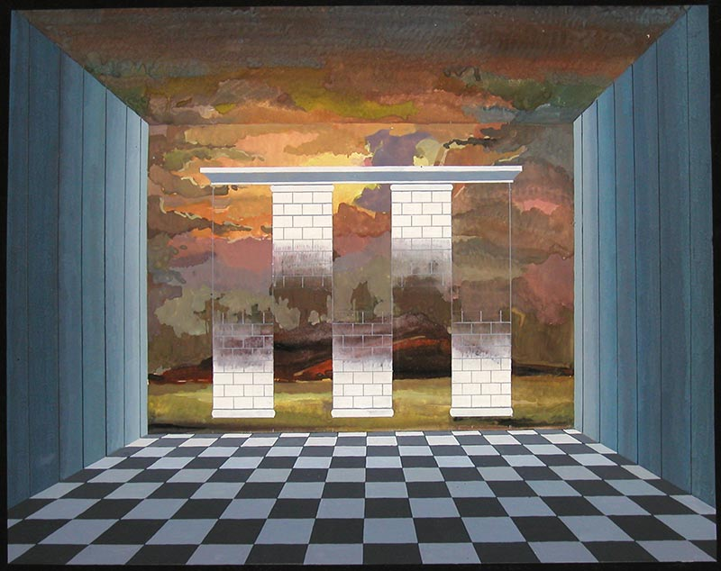
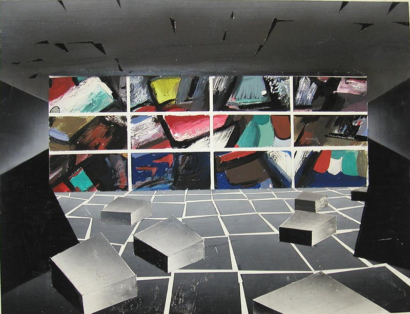
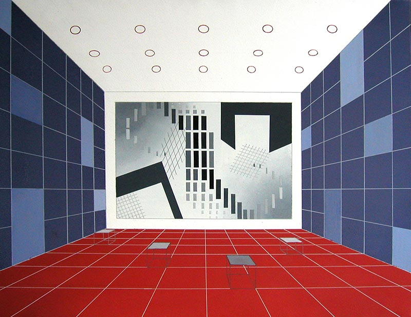
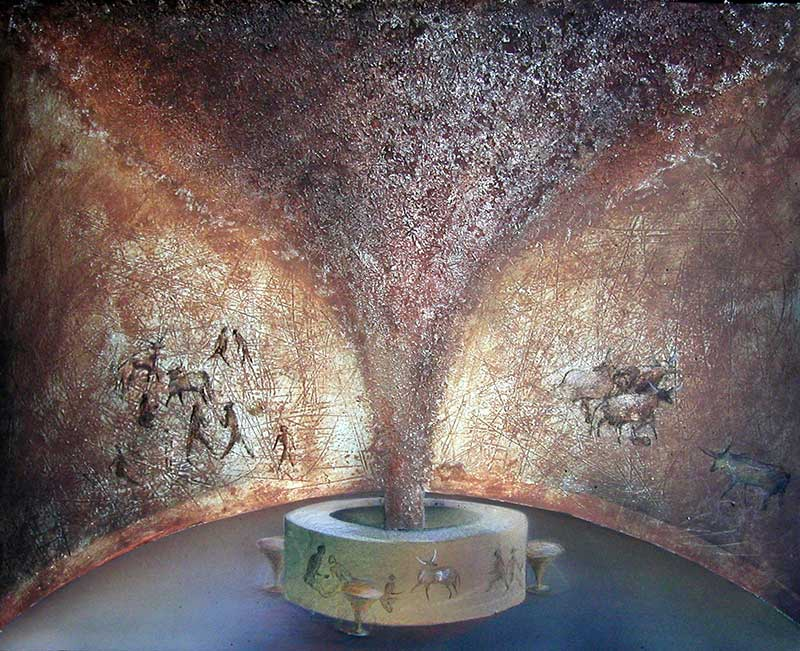

Интерьер - это место, где городской человек проводит почти всю свою жизнь. Здесь он рождается и растет, учится и развлекается, работает и лечится. Не в морские дали и не в лесные чащи всматривается его глаз - с детских лет он рассматривает плоские картинки в книжках, экран телевизора и кино; все науки входят в его память с плоских книжных страниц.
Не бескрайние степи и не высокие горы формируют его чувство пространства: его пространство — это детская 2,5х4,0 м, жилая комната 3х6 м или ее часть. А иной раз его жизненное пространство ещё скромнее, ещё уже: это промежуток между столом и холодильником на кухне, уголок за шкафом или ширмой; по дороге на работу пространство, отведенное человеку, не превышает размеров его собственного тела.
Пространство школьного класса, аудитории, кинотеатра, цеха или комнаты в учреждении более обширно, но оно не «своё», мы делим его со многими другими людьми, уступаем его столам или станкам, шкафам и приборам. Современный городской человек живет на «голодном пайке» пространства, в жилище и на рабочем месте его очень мало. Это неизбежно — каждый из нас должен потесниться, чтобы дать место другому и другим.
Но теснота — не единственная и не самая опасная «болезнь пространства» в наше время. Мнегим людям она даже нравится: дети любят тесные уголки, отшельники живут в кельях, ученые предпочитают небольшие кабинеты.
Более тяжелая болезнь нашего времени — «десакрализация» пространства, лишение его духовности, поэтического звучания и собственного смысла (семантики). Справедлива мысль М. Хайдеггера: «В просторе и сказывается, и вместе таится событие. Эту черту пространства слишком часто просматривают» (Die Kunst und der Raum. Erker þ Verlag, 1969). Искусство интерьера порой забывает о самоценности пространства, о жизненной необходимости пустоты - вместилища духовного начала. Полезные вещи, заполняющие интерьер, придают ему «профанный» характер, а профанные пространства, по словам М. Хайдеггера — «это всегда отсутствие сакральных пространств, часто оставшихся в далеком прошлом». Между тем, человек, постоянно обитающий в интерьерах, нуждается не только в деловых и полезных помещениях, как не может он питаться только телесной пищей. Он нуждается в музыке и поэзии, он ищет иного, не бытового и не производственного пространства, наполненного духом поэзии и более высокой, не «житейской» истины.
В начале ХХ века, в эпоху ломки классических традиций и выхода искусства на новые пути, художники интерьера заново «открывают» пространство, как в свое время импрессионисты заново открыли цвет. Интерьеры Ле корбюзье, В. Гроппиуса, М. ван дер Роэ, Тео ван Дусбурга, Г. Якулова, Эль Лисицкого — не столько вместилища вещей и людей, сколько манифесты нового духа архитектуры, духа нового времени. Они созвучны поэзии Аполлинера и Маяковского, музыке Стравинского и Прокофьева.
В тридцатые — пятидесятые годы, тяжелые для Европы, процесс развития искусства интерьера приостановился и даже несколько повернул вспять. И, наконец, в 60-е годы происходит новый качественный скачок: пространство ищет выразительности, ищет духовности и поэзии.
Поиски эти ведутся на разных направлениях: пространство подвергается всевозможным иллюзорным расширениям, сжатиям, искривлениям, оно наполняется сложными ритмами, яркими бликами и глубокими тенями (Христиан Мегерт, Станислав Замечник); пространство расчленяется и ритмизируется, как музыка, вместе с формой и светом оно образует свето-музыкальный синтез (один из примеров — павильон фирмы Филипс на ЭКСПО-70, архитектор Ле Корбюзье); пространство переносит человека в мир иных измерений, где человек, встречаясь с самим собой или с себе подобными, может увидеть себя и других в неожиданном ракурсе («пространства для общения», environment). Массовое распространение получает «натурстиль», стремящийся компенсировать утраченные контакты с природой, преодолеть будничность и техницизм. Художник нашего времени говорит новым языком пространства, форм и цвета о новых и старых проблемах человека.
Думается, что с течением времени роль архитектуры в жизни общества будет возрастать. И по мере того, как будут совершенствоваться деловые и производственные интерьеры, будет возрастать потребность в не-деловых, в таких, где человеческая мысль и чувство обнаруживают себя заново, пробуждаются от дремоты, высвобождаются из-под гнета повседневных забот.
Сегодня в художественных вузах воспитываются художники, которым предстоит работать в ХХI-м веке. Высшая школа не должна уклоняться от ориентации специалистов на будущее. Поэтому учебные задачи, решаемые студентами, могут и должны несколько отличаться от практических задач данного момента. Развитие чувства пространства, чувства поэтичности и концептуальности интерьера, его смысловой содержательности невозможно на стереотипных примерах массовых интерьеров.
В нашем курсе колористики задачи на разработку цветовых схем интерьеров формулируются примерно так:
- Колорит интерьера должен вызывать определенные психологические ассоциации (музыкальные, пейзажные и другие)
- Формы, заполняющие интерьер, и их окраска визуализируют какие-либо представления (легкость или тяжесть, изящество, драматизм, активность и т.д.)
- Окраска одного и того же интерьера решается в различных гаммах, и при этом выразительность его существенно изменяется
- Формы и колорит интерьера «портретируют» какого-либо человека (имеется в виду общеизвестный тип или персонаж)
- Интерьер всем своим композиционным и колористическим строем подготавливает зрителя к восприятию той или иной экспозиции (вводные залы к выставкам)
- Цветовая схема воспроизводит какой-либо обычный тип интерьера, но при этом используются нетрадиционные средства (театрализованное решение)
Задачи на проектирование цветовых схем интерьеров полезны не только художникам по интерьеру, но и дизайнерам других профилей. Ведь пространство, форма и цвет — универсальные категории любой визуальной структуры.
Краткие комментарии к проектам интерьеров кафе

«Интеграл»
— кафе для интеллектуалов. Роспись торцевой стены создает ощущение релятивности, призрачности бытия, эфемерности сущего при неустранимом законе ритма и канона в объективной реальности. Автор: О. Данченко

«Квадрат».
Кафе для художников, разрабатывающих наследие авангарда ХХ века. Ломка классической традиции, n-мерность пространства, четкость цветовой системы. Автор: В. Мамотенко

«Белая гора».
Атмосфера близости и вместе с тем недостижимости святыни, возврат к природе с ее естественными формами, «заревое» освещение. Автор: Т. Сатюк

«Крит».
Пространство расчленено на резко противостоящие зоны - насыщенную энергией верхнюю и тяжелую косную нижнюю, внушающую мрачные воспоминания о подземном лабиринте, образ которого визуализирован на торцевой стене зала. Автор: Н. Стефанович

«Футурист».
Безудержный динамизм стенной фрески, сильные контрасты насыщенных красок заряжают посетителей энергией, подобно джазовой музыке; человека же, изначально возбужденного, в силу эффекта катарсиса приводит в нормальное состояние. Автор: Ю. Тореев

«Квадрат».
Здесь концепция пространства иная, чем в предыдущем примере. Свободный полет геометрических «планит» ограничен строгими прямыми линиями и плоскостями, пол и стены производят успокаивающее действие своей окраской. Автор: В. Капралов

«Викинг».
Грубая сила, первобытная мощь скандинавских воинов-разбойников; хрупкость и изящество корабельных носов внушают мысль о непрочности бытия корабельщиков, подверженного риску и опасностям. Автор: С. Звонарева

«Пастушка».
Интерьер решается за счет большого стенного панно, линии и краски которого, не копируя природный пейзаж, вызывают представление о многообразии и сложности форм земного ландшафта. Автор: Ю. Тореев.

«Футурист».
Основной эффект интерьера — переход изображенных плоскостей из двумерного пространства в реальное трехмерное; прием оп-артической растушевки на элементах композиции внушает представление о возможности перехода в n- мерное пространство космоса. Осуществляется мечта художников начала ХХ века о преодолении неподвижности живописи во времени и пространстве. Классическая цветовая система красный–синий–белый вносит сдерживающее начало в несколько возбуждающий динамизм композиции. Автор: Ю. Тореев.

«Интеграл».
Композиция на торцевой стене представляет собой сложное сочетание ортогональных и наклонных линий, прямых и острых углов, крупных и мелких фигур. Здесь сочетаются законы элементарной и высшей математики, плоскостные и пространственные символы. В центральном фрагменте композиции зашифрован знак интеграла, начало и окончание которого находятся в бесконечно далеком пространстве, а середина - на плоскости стены. Контрасты яркостей и красно-сине-белых красок интерьера создают необходимый декоративный эффект. Автор: Т. Новикова.

«Троглодит».
Интерьер воссоздает экзотическую атмосферу первобытной пещеры со стенами и столбами из натурального камня. Центрическое пространство с «мировым столбом» посредине ассоциируется с храмовой архитектурой примитивных народов и Древнего Рима. Автор: Е. Земцова
Л. Миронова,
2006